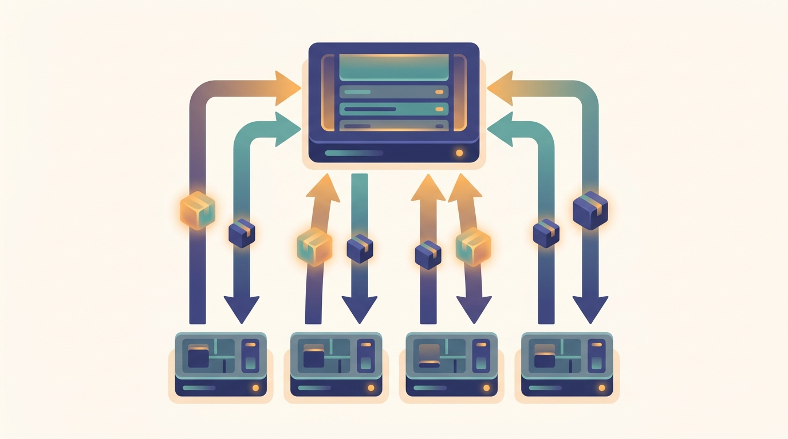

"They taught me fourteen pictures and then forty-one chapters. I confess I navigated the whole book by the pictures, and only consulted the chapters when a picture stopped being enough."
A Worker That Thinks in Diagrams
A book that travels from the MapReduce shuffle to mixture-of-experts routing to multi-agent swarms keeps returning to the same small set of pictures, and this page collects those pictures in one place. Each of the fourteen mental models below is a single image that compresses one of the book's core "aha" moments: the six axes along which a system can be distributed, the ring that makes gradient synchronization bandwidth-optimal, the funnel that powers search and RAG alike, the masks that cancel so a server learns only a sum. Every illustration here also appears inline in the section that first teaches the concept, with the full prose, math, and code around it; this gallery is the map, and the linked section is the territory. Skim it once now to meet the recurring shapes of the book, and return to it whenever a later chapter reuses a concept and you want the one-picture reminder of where it came from.
The fourteen concepts below are not a random sample; they are the ideas that recur across parts and carry the book's connective weight. Several reappear scaled out or specialized later: the ring all-reduce of Chapter 4 is the engine under data-parallel training, the MapReduce shuffle of Chapter 6 returns as the all-to-all of expert routing, and the parameter-server push-pull of Chapter 11 reappears as the sharded gather-and-scatter of ZeRO and FSDP. The cards are ordered to follow the book's arc, foundations first, then data, training, inference, and finally multi-agent and privacy. Each card names the chapter and section where the picture is first developed in full, so the gallery doubles as an index of first appearances.
The Six Axes of Distribution

Distribution is not one decision but six: a system can distribute its data, its training, its model, its inference, the coordination of its cluster, and its intelligence. Every later part extends one of these spokes.
First taught in: Chapter 1, Section 1.2: The Six Axes of Distribution
Scale-Out vs Scale-Up

Scale-up grows one machine taller; scale-out replicates work across many equal machines. This book leads with scale-out and treats single-node efficiency as a labeled per-node prerequisite.
First taught in: Chapter 1, Section 1.3: Scale-Out vs Scale-Up
Ring All-Reduce

Workers arranged in a ring each pass a chunk to their neighbor; after one trip around, every worker holds the identical complete sum. Bandwidth-optimal gradient synchronization underpins data-parallel training.
First taught in: Chapter 4, Section 4.4: All-Reduce Algorithms, and Why Ring All-Reduce Mattered for Deep Learning
Sharded Data Parallelism (ZeRO/FSDP)

Instead of replicating the whole model on every device, sharded data parallelism splits parameters, gradients, and optimizer state into disjoint shards, gathering each just in time and scattering it back to keep memory low.
First taught in: Chapter 16, Section 16.4: Sharded Data Parallelism: ZeRO Stages 1-3
The MapReduce Shuffle

Map emits key-value pairs, the shuffle routes every pair to the worker that owns its key, and reduce folds each group into a result. The shuffle is the all-to-all that reappears throughout the book.
First taught in: Chapter 6, Section 6.2: The Map, Shuffle, and Reduce Pattern
Parameter Server Push-Pull

Workers push gradient updates up to a central parameter store and pull fresh parameters back down. The push-pull loop is the asymmetric alternative to symmetric all-reduce.
First taught in: Chapter 11, Section 11.2: Push-Pull Architecture
Gang Scheduling

Synchronous training is all-or-nothing: every worker must be placed before any can start, or the job deadlocks. Gang scheduling co-places the whole group as one inseparable unit, ideally on the same rack.
First taught in: Chapter 33, Section 33.5: Gang Scheduling and Collective-Aware Placement
One Federated Round (FedAvg)

The hub broadcasts the global model to devices, each trains locally on data that never leaves, and the hub averages the returned updates into a new model. Training distributes while data stays put.
First taught in: Chapter 14, Section 14.3: FedAvg and Its Variants
Paged KV Cache

Attention memory is managed like virtual memory: the cache is split into fixed pages and each sequence occupies a scattered set of pages linked by pointers, eliminating fragmentation and lifting serving throughput.
First taught in: Chapter 22, Section 22.5: KV Cache and Paged Attention
Mixture-of-Experts Routing

A gating router sends each token to only one or two of many expert subnetworks, so most experts stay idle for any given token. Sparse routing buys capacity without paying dense compute.
First taught in: Chapter 17, Section 17.2: The Mixture-of-Experts Layer
The Retrieve-then-Rank Funnel
A huge candidate pool is narrowed by a fast approximate retrieval stage, then by a precise but expensive reranking stage, into a tiny ordered shortlist. The same funnel powers search, RAG, and recommendation.
First taught in: Chapter 25, Section 25.7: Multi-Stage Retrieval and Distributed Reranking
Emergence from Local Rules

Each agent follows the same simple rule with its nearest neighbors, and a coherent global pattern emerges that no agent designed or controls. Simple local interactions produce complex collective order.
First taught in: Chapter 31, Section 31.2: Swarm Intelligence
Centralized Training, Decentralized Execution

During training a central critic sees the global state of every agent; at execution each agent acts alone from its own local observation. Learn together, then act independently.
First taught in: Chapter 30, Section 30.5: Centralized Training with Decentralized Execution
Secure Aggregation

Each participant hides its update under a random mask, and the masks are paired opposites that cancel exactly when summed, so the server learns only the aggregate total and never any individual contribution.
First taught in: Chapter 14, Section 14.6: Privacy and Secure Aggregation
These fourteen pictures are the shorthand; the chapters are the full account. The natural place to begin is the first one, where the six axes of this gallery are derived rather than assumed. Chapter 1 opens the book proper by showing one machine stop being enough and watching many workers compute the identical gradient a single machine would have, then turns that one calculation into the six axes of distribution that organize everything to follow. Read it next, and return to this gallery whenever a later chapter reuses a shape you first met here.